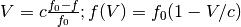

doppler_radio¶
-
astropy.units.doppler_radio(rest) [edit on github][source]¶ Return the equivalency pairs for the radio convention for velocity.
The radio convention for the relation between velocity and frequency is:

Parameters: rest :
QuantityAny quantity supported by the standard spectral equivalencies (wavelength, energy, frequency, wave number).
References
NRAO site defining the conventions
Examples
>>> import astropy.units as u >>> CO_restfreq = 115.27120*u.GHz # rest frequency of 12 CO 1-0 in GHz >>> radio_CO_equiv = u.doppler_radio(CO_restfreq) >>> measured_freq = 115.2832*u.GHz >>> radio_velocity = measured_freq.to(u.km/u.s, equivalencies=radio_CO_equiv) >>> radio_velocity <Quantity -31.209092088877583 km / s>